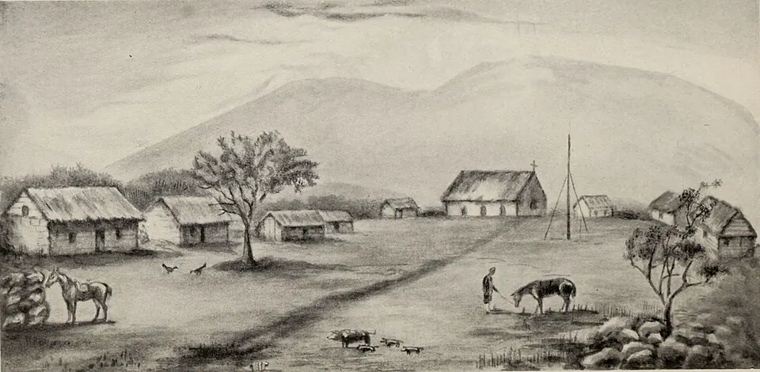

Rebelión de María Angata

Tras la Incorporación de Rapa Nui (1888), el Estado arrendó la isla en 1895 al empresario Enrique Merlet, y luego quedó en manos de la Compañía Explotadora de Isla de Pascua, ligada a la firma británica Williamson, Balfour y Cía. La isla se convirtió en una estancia ovejera: el pueblo rapanui, de unos pocos cientos de personas, fue confinado al poblado de Hanga Roa, mientras el resto del territorio era para el ganado. Los rapanui sostenían que eso contradecía el acuerdo de 1888. Los reclamos tenían costos: el ariki Riroroko viajó a Valparaíso a protestar ante el Gobierno, un viaje que los investigadores Rolf Foerster y Sonia Montecino consideran una deportación encubierta, y murió allí poco después, a fines de la década de 1890, en circunstancias no aclaradas (según la tradición rapanui, fue envenenado).
El 30 de junio de 1914, María Angata, una anciana catequista, se presentó ante el administrador de la compañía, Edmunds, y le anunció que había tenido un sueño enviado por Dios: Merlet había muerto y la isla pertenecía a los rapanui, que debían tomar el ganado y celebrar un banquete. Ese mismo día llegó al administrador una declaración escrita, firmada «Daniel Antonio» y atribuida a su yerno, Daniel Teave: los animales y la tierra eran de los isleños, y habérselos dado a Merlet sin pago alguno había sido un robo. Durante cinco semanas los rapanui sacaron ganado, celebraron banquetes y bodas colectivas, y levantaron una bandera para su nueva «república». Katherine Routledge, arqueóloga británica que estaba en la isla, fue testigo y dejó un relato detallado. La comunidad, sin embargo, no estaba unida: no todos creían en las profecías de Angata.
A comienzos de agosto llegó el buque escuela General Baquedano. Su comandante, Almanzor Hernández, abrió un sumario, apresó a cuatro dirigentes y liberó a tres; no hubo castigo colectivo, y según relatos recogidos después reprendió a los representantes de la compañía. Daniel Teave fue llevado detenido al continente. Angata murió unos seis meses más tarde.
La rebelión puso en evidencia los abusos de la compañía. En 1916 visitó la isla el obispo Rafael Edwards, y desde 1917 la isla quedó bajo autoridad naval. La compañía siguió hasta la década de 1950 y la Armada administró la isla hasta que la Ley 16.441, publicada el 1 de marzo de 1966, creó el Departamento de Isla de Pascua y una administración civil. Los investigadores debaten el sentido del levantamiento: para algunos fue un movimiento religioso y profético; para Rolf Foerster y Sonia Montecino fue también una protesta política basada en el pacto de 1888. Destaca, además, que lo encabezara una mujer en una sociedad donde las jefaturas eran masculinas.
Versión para niños
En 1914, Rapa Nui era como una gran estancia de ovejas. Una compañía usaba casi toda la isla, y el pueblo rapanui debía vivir en el poblado de Hanga Roa, muchas veces con hambre. Una anciana muy respetada, María Angata, contó que había soñado que Dios quería devolverles la tierra. Los rapanui tomaron animales de la compañía e hicieron grandes comidas. Cuando llegó un barco de la Armada de Chile, el capitán escuchó sus reclamos. Detuvo a algunos dirigentes, pero no castigó a toda la comunidad.
Para maestros
Nivel sugerido: 1° medio
Objetivo: Analizar la situación del pueblo rapanui bajo la compañía ganadera y la rebelión de 1914 como una forma de resistencia, relacionándola con las distintas interpretaciones del acuerdo de 1888.
Preguntas para la clase:
- ¿Por qué los rapanui sentían que la compañía no respetaba el acuerdo de 1888?
- ¿Qué razones religiosas y qué razones políticas aparecen en la rebelión?
- ¿Por qué es importante que el principal testimonio escrito sea el de una extranjera? ¿Qué voces faltan?
Actividad (20–30 min): Los estudiantes releen el segundo y el tercer párrafo de esta nota y anotan en una tabla qué reclamaban los rapanui, qué hicieron y cómo respondió la autoridad. Luego observan la imagen de Hanga Roa en 1914 y la comparan con lo que dice el texto sobre el confinamiento. Cierre: discutir si fue una rebelión religiosa, política o ambas, y relacionarla con Incorporación de Rapa Nui.
Fuentes sugeridas: Memoria Chilena; Museo Antropológico Padre Sebastián Englert; Biblioteca del Congreso Nacional (BCN).
Objetivos de Aprendizaje (Currículum Nacional)
- 2° básico · HI02 OA 02 Comparar el modo de vida y expresiones culturales de algunos pueblos indígenas presentes en Chile actual (como mapuche, aimara o rapa nui)
- 6° básico · HI06 OA 05 Describir cómo se conformó el territorio de Chile durante el siglo XIX … la incorporación de Isla de Pascua
- 1° medio · HI1M OA 24 Evaluar … las relaciones de conflicto y convivencia con los pueblos indígenas (aymara, colla, rapa nui, mapuche, quechua, atacameño, kawéskar, yagán, diaguita)
Personajes
Fuentes
- Memoria Chilena — Rapa Nui
- Chungara, Revista de Antropología Chilena (Universidad de Tarapacá), vía Redalyc — Foerster y Montecino, «A 100 años de la rebelión de Angata» (2016)
- Project Gutenberg — Katherine Routledge, The Mystery of Easter Island (1919), testimonio directo
- Biblioteca del Congreso Nacional — Ley 16.441, crea el Departamento de Isla de Pascua (1966)
Revisión humana pendiente. Cómo se revisa · Reportar un error
Cómo citar: Historia de Chile. (2026). Rebelión de María Angata. En Historia de Chile: atlas y línea de tiempo. https://moises-salgado.github.io/historia-de-chile/momento/rebelion-de-maria-angata.html